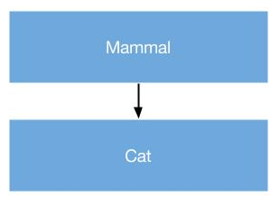
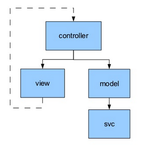
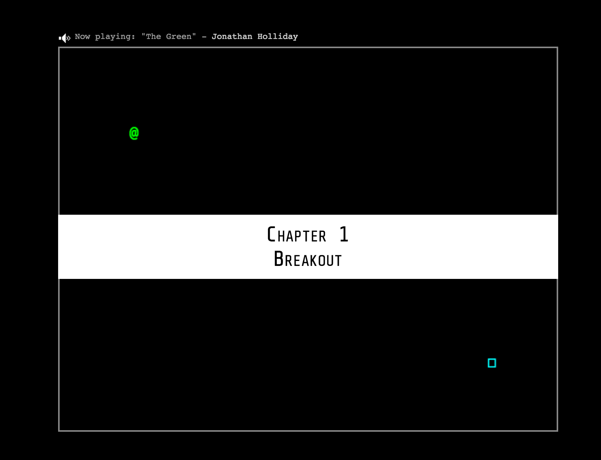
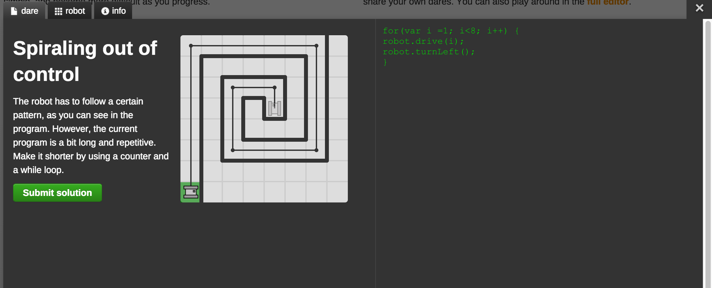

OOP
in javascript
Ramūnas Kiupelis
Agenda
- What is object?
- Why to use OOP?
- How to create object?
- Encapsulation
- Inheritance
- Javascript models (MVC, observer, singleton)
- RequireJS
What is object?
Which elements are objects?
- var obj = new InitApp();
- var obj = new Object();
- var obj = new Array();
- var obj = new Number();
- var obj = new Boolean(false);
- var obj = {};
- var obj = [];
- function obj () {}
- var obj = 10;
- var obj = "object";
- var obj = false;
typeof obj === "object"What is object?
// Consider this simple object:
var myFirstObject = {
firstName: "Richard",
favoriteAuthor: "Conrad",
age: 12,
howSweetAmI: function () {
console.log("Hmm Hmm Good");
}
};
// custom function for creating object
function Person(firstName) {
this.firstName = firstName;
}
var peter = new Person("Peter");
What happens if we call:
var peter = Person("peter");Why to use OOP?
- Encapsulation
- Aggregation
- Inheritance
- Polymorphism
Creating objects
Creating objects
- Object Literals
- Object Constructor
Object Literals
// This is an empty object initialized using the object literal notation
var myBooks = {};
// This is an object with 4 items, again using object literal
var mango = {
color: "yellow",
shape: "round",
sweetness: 8,
howSweetAmI: function () {
console.log("Hmm Hmm Good");
}
}
Object Constructor
var mango = new Object ();
mango.color = "yellow";
mango.shape= "round";
mango.sweetness = 8;
mango.howSweetAmI = function () {
console.log("Hmm Hmm Good");
}
Practical models creating objects
- Constructor model
- Prototype model
Constructor model
function Fruit (theColor, theSweetness, theFruitName, theNativeToLand) {
this.color = theColor;
this.sweetness = theSweetness;
this.fruitName = theFruitName;
this.nativeToLand = theNativeToLand;
this.showName = function () {
console.log("This is a " + this.fruitName);
}
this.nativeTo = function () {
this.nativeToLand.forEach(function (eachCountry) {
console.log("Grown in:" + eachCountry);
});
}
}
Prototype model (1)
function Fruit (name) {
this.fruitName = name;
}
Fruit.prototype.color = "Yellow";
Fruit.prototype.sweetness = 7;
Fruit.prototype.nativeToLand = "USA";
Fruit.prototype.showName = function () {
console.log("This is a " + this.fruitName);
}
Fruit.prototype.nativeTo = function () {
console.log("Grown in:" + this.nativeToLand);
}
Prototype model (2)
function Fruit (name) {
this.fruitName = name;
}
Fruit.prototype = {
constructor: Fruit,
color: "Yellow",
sweetness: 7,
fruitName: "Generic Fruit",
nativeToLand: "USA",
showName: function () {
console.log("This is a " + this.fruitName);
},
nativeTo: function () {
console.log("Grown in:" + this.nativeToLand);
}
};
Note: prototype
// Prototype Attribute of Objects Created With a Constructor Function
var Account = function () {};
var userAccount = new Account ();
// userAccount initialized with the Account ()
// constructor and as such its prototype attribute (or prototype object)
// is Account.prototype.
Encapsulation
- Object encapsulation
- Functionality encapsulation
Object encapsulation
function Person(name) {
this.name = name;
var _name = function () {
return "My name is " + name;
};
this.prettyName = function () { return _name(); };
}
Person.prototype.public = function () {
this.newCar = "BMW";
return (function (name) {
var display = "Public is: " + name;
return display;
})(this.name);
}
var peter = new Person("Peter");
peter.prettyName(); // "My name is Peter"
typeof peter.newCar; // "undefined"
peter.public(); // "Public is: Peter"
peter.newCar; // "BMW"
typeof peter._name; // "undefined"
typeof peter.public.display; // "undefined"
Functionality encapsulation
(function (window, $, obj, undefined) {
...
})(window, window.jQuery, myVar = myVar || {} , "undefined");
obj.name = "test"; // myVar ??
obj = {"init" : "test"}; // myVar ??
myVar = {}; // obj ???
var myVar = {};
(function (window, $, obj, undefined) {
obj.name = "test";
// {"obj":{"name":"test"},"myVar":{"name":"test"}}
obj = {"init" : "test"};
// {"obj":{"init":"test"},"myVar":{"name":"test"}}
myVar = {};
// {"obj":{"init":"test"},"myVar":{}}
})(window, window.jQuery, myVar = myVar || {} , "undefined");
// {"obj":"undefined","myVar":{}}
Namespace
Object literal pattern
function namespace(namespaceString) {
var parts = namespaceString.split('.'),
parent = window,
currentPart = '';
for(var i = 0, length = parts.length; i < length; i++) {
currentPart = parts[i];
parent[currentPart] = parent[currentPart] || {};
parent = parent[currentPart];
}
return parent;
}
var module = namespace("very.long.module.path");
very.long.module.path === module;
Inheritance
Simple inheritance
Simple inheritance code
function Mammal(name) {
this.name = name;
}
Mammal.prototype = {
constructor: Mammal,
say:function () { return "I"; }
}
function Cat(name) {
this.name = name;
}
Cat.prototype = new Mammal();
Cat.prototype.say = function () { return "Meow!"; }
Advanced inheritance
if (typeof Object.create !== 'function') {// Crockford’s method
Object.create = function (o) {
function F() {}
F.prototype = o;
return new F();
};
}
function inheritPrototype(childObject, parentObject) {
// copy the properties and methods from the parentObject onto the childObject
// So the copyOfParent object now has everything the parentObject has
var copyOfParent = Object.create(parentObject.prototype);
// Then we set the constructor of this new object to point to the childObject.
// Why do we manually set the copyOfParent constructor here, see the explanation
// immediately following this code block.
copyOfParent.constructor = childObject;
// Then we set the childObject prototype to copyOfParent,
// so that the childObject can in turn inherit everything
// from copyOfParent (from parentObject)
childObject.prototype = copyOfParent;
}
Example
function Person(name) {
this.name = name;
}
Person.prototype.public = function () {
return (function (name) {
return "Public is: " + name;
})(this.name);
}
function Manager(name) {
Person.call(this, name)
this.taskList = [];
}
// inherit the methods and properties from Person
inheritPrototype(Manager, Person);
Manager.prototype.addTask function(task) {
this.taskList.add(task);
}
Javascript models (MVC, observer, singleton)
MVC
View
- Responsibilities
- Manipulate html
- Generate HTML from templates
- Dispatch events to listeners
- Nothing more!
- References
- A set of event listeners (typically the controller)
Controller
- Responsibilities
- Handle all events from the view model view
- Poll model for change events if relevant svc
- Convert events to commands against the model
- Repaint strategy
- Error handling strategy
- References
- The model (to execute commands, polling)
- The view (to do repainting)
Model
- Responsibilities
- Cache state to minimize round view model trips
- Provide view and controller with a useful interface of the svc data model
- References
- The service proxy
SVC
- Responsibilities
- Provide a javascript api view model mapping of the server api
- References
- The physical server via ajax
MVC
Singleton pattern
- Advantages
- Reduced memory footprint
- Single point of access
- Delayed initialization that prevents instantiation until required
- Disadvantages
- Once instantiated, they're hardly ever "reset"
- Harder to unit test and sometimes introduces hidden dependencies

Singleton pattern
var mySingleton = (function () {
// Instance stores a reference to the Singleton
var instance;
function init() { ... };
return {
// Get the Singleton instance if one exists
// or create one if it doesn't
getInstance: function () {
if ( !instance ) {
instance = init();
}
return instance;
}
};
})();
Observer Pattern
- Advantages
- Requires deeper-level thinking of the relationship between the various components of an application
- Helps us pinpoint dependencies
- Excellent at decoupling objects which often promotes smaller, reusable components
- Disadvantages
- Checking the integrity of your application can become difficult
- Switching a subscriber from one publisher to another can be costly
Observer Pattern
RequireJS & AMD
Asynchronous Module DefinitionAdvantages
- Asynchronous by nature
- Dependencies are easy to identify
- Avoids global variables
- Can be lazy loaded if needed
- Easily portable
On top of that
- Can load more than JavaScript files
- Powerful plugin support
- Support script fallbacks (OMG, CDN is down!)
- Can be easily configured
- Can load multiple versions of the same library
Example
purchase.js
function purchaseProduct(){
console.log("Function : purchaseProduct");
var credits = getCredits();
if(credits > 0){
reserveProduct();
return true;
}
return false;
}
Example
products.js
function reserveProduct(){
console.log("Function : reserveProduct");
return true;
}
credits.js
function getCredits(){
console.log("Function : getCredits");
var credits = "100";
return credits;
}
Example in require js
purchase.js
define(["credits","products"], function(credits,products) {
console.log("Function : purchaseProduct");
return {
purchaseProduct: function() {
var credit = credits.getCredits();
if(credit > 0){
products.reserveProduct();
return true;
}
return false;
}
}
});
Example in require js
products.js
define(function(products) {
return {
reserveProduct: function() {
console.log("Function : reserveProduct");
return true;
}
}
});
credits.js
define(function() {
console.log("Function : getCredits");
return {
getCredits: function() {
var credits = "100";
return credits;
}
}
});
Require js
OOP Lessons
http://www.codecademy.com/courses/objects-ii/
Untrusted
JS Dares
Code Combat